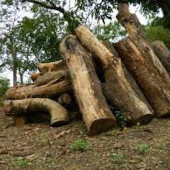
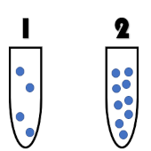
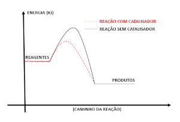
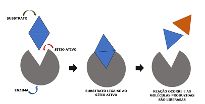

CINÉTICA
A primeira relação quantitativa entre taxa de reação e concentração dos reagentes foi desenvolvida em 1850 pelo químico alemão Ludwig F. Wilhelmy (1812-1864), com base em seus estudos sobre a hidrólise da sacarose catalisada por ácidos. Algumas décadas depois, o químico holandês Jacobus van’t Hoff (1852-1911) estendeu e generalizou a análise matemática do progresso de uma transformação química que tinha sido realizada anteriormente por Wilhelmy e outros. Essa relação matemática entre a taxa de reação e a concentração dos reagentes recebe hoje o nome de lei cinética de reação. Considere a reação genérica:
C(g) + B(g) ⇌ CB(g)
A lei cinética dessa reação pode ser escrita como:
Ti = k · [A]x · [B]y
em que:
- k é a constante de rapidez, que é característica da reação e depende da temperatura, mas não da concentração das espécies químicas;
- x e y são as ordens da reação em relação aos reagentes A e B, respectivamente;
- [A] e [B] são as concentrações dos reagentes A e B, respectivamente, em mol/L
Cinética é a parte da química que aborda as velocidades das reações nisso faz com que possamos observar algumas reações do no nosso contidiano, você já parou pra pensar que qualquer alimento que não esteja dentro da geladeira tem a sua vida útil reduzida, e quando colocamos dentro da geladeira a sua "vida útil" é aumentada consideravelmente.
Ou seja aqui ficou nitido que a temperatura influenciou na velocidade das reações anteriores, assim também outros fatores podem influenciar como: superficie de contato, concentração dos reagentes e o uso de catalisadores.
- superficie de contato: se pegar dois comprimidos efervecentes tritutar um e deixar o outro inteiro, vai perceber que o triturado vai dissolver mais rápido isso porque aumentamos a superficie de contato. Assim, também vale para as imagens a seguir onde se tem um palito de fosforo de um lado e um tronco de uma arvore do outro, qual dos dois é mais fácil de pegar fogo ?
- Concentração dos reagentes pode influenciar em uma reação, nisso, vai aumentar as interações entre as moléculas, fazendo com que tenha mais colisões entre as espécies reagentes fazendo com que a reação seja mais rápida que o esperado.
- Catalisadores: É uma substância ou mistura capaz de acelerar uma reação química, participando em alguma fase dela, mas que ao final da reação é regenerado, isto é, não tem sua natureza química modificada.
- Enzimas: São prote´nas que atuams controlando a velocidade e regulando as reações que ocorrem no organismo. Nesse seguimento, vale lembrar que as enzimas são altamente específicas, sendo que cada uma delas atua sobre um substrato específico.

Isso mesmo o palito de fosforo é mais facil de pegar fogo porque a superficie de contato é menor.

Tá perceptivel que o recipiente 2 tem mais moleculas que o recipente 1, com isso, tem uma probabilidade de choque muito maior. Portanto, faz com que a reação ocorra mais rápida onde tem maior choque efetivo entre as moleculas
Como age um catalisador ? Observe o grafico a seguir.

O catalisador é capaz de diminuir a energia de ativação por meio da modificação do mecanismo original dessa reação. Com isso, a reação fica mais rápida, pois mais partículas reagentes terão a energia necessária para que suas colisões sejam efetivas. No grafico anterior mostra o caminho da reação com o catalisador e sem o catalisador.
A seguir tem um mecanismo de ação das enzimas.

A enzimas age na variação de entropia, onde direciona o substrato para que ele não colida de forma aleatória, aumentando a eficiência da reação. Dimimui também a energia de ativação.